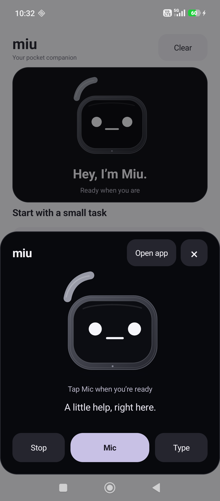

01 / IN YOUR POCKETA little hello,
A little hello,
just a press away.
Choose Miu as your Android assistant to bring up its compact black panel. Talk, type, then get back to your day.
Meet Miu for Android
Actual app · Assistant gesture varies by phone